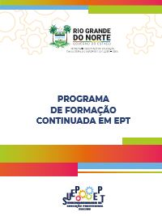

Agenda formativa da EPT
Desde 2023, a rede estadual tem um Programa de Formação Continuada pensado para quem trabalha na educação profissional. São seis ações ao longo do ano, cada uma com seu público e seu momento no calendário escolar.

As seis ações do ano
Ambientação em EPT
Para quemNovos profissionais da redePara quêImersão na identidade e nos princípios da EPT potiguarEncontro com as DIRECs
Para quemEquipes pedagógicas das DIRECsPara quêAlinhar as prioridades do ano em cada territórioCiclo de Gestão em EPT
Para quemGestores, vice-gestores e coordenaçõesPara quêQualificar o planejamento, o uso de indicadores e a gestão da ofertaVisitas técnicas de EPT
Para quemEquipes das instituições educacionaisPara quêAcompanhamento pedagógico e administrativo das unidadesCiclo Pedagógico de Formação Docente
Para quemProfessores da formação geral básica e do eixo tecnológicoPara quêFortalecer a integração curricular e as práticas pedagógicasSeminário e Colóquio de EPT
Para quemComunidade escolar, parceiros e toda a redePara quêCompartilhar experiências e dar visibilidade ao que a rede aprendeu
As datas de cada encontro são enviadas às DIRECs e às unidades e divulgadas no Instagram da SUEP.
O método da SUEP
O programa segue o método Problematizar, Argumentar e Comunicar, criado pela SUEP. O ponto de partida é sempre a realidade da rede: suas dúvidas, dificuldades, resultados e experiências.
Diretrizes escritas com a rede
Os documentos de referência da EPT são escritos de forma colaborativa, por grupos de várias áreas. A concepção dos IERNs reuniu mais de 30 profissionais da SEEC-RN e representantes de 12 instituições.
Antes da implantação dos institutos, a SUEP promoveu plenárias abertas nos territórios. Estudantes, famílias, educadores, lideranças e o mundo do trabalho definiram juntos os cursos de cada IERN.

Programa de Formação Continuada em EPT
O documento completo do programa, com as ações, os públicos e o método.
Baixar PDFCadernos, cartilhas e orientações
Os materiais usados nas formações estão na aba Documentos, prontos para baixar.